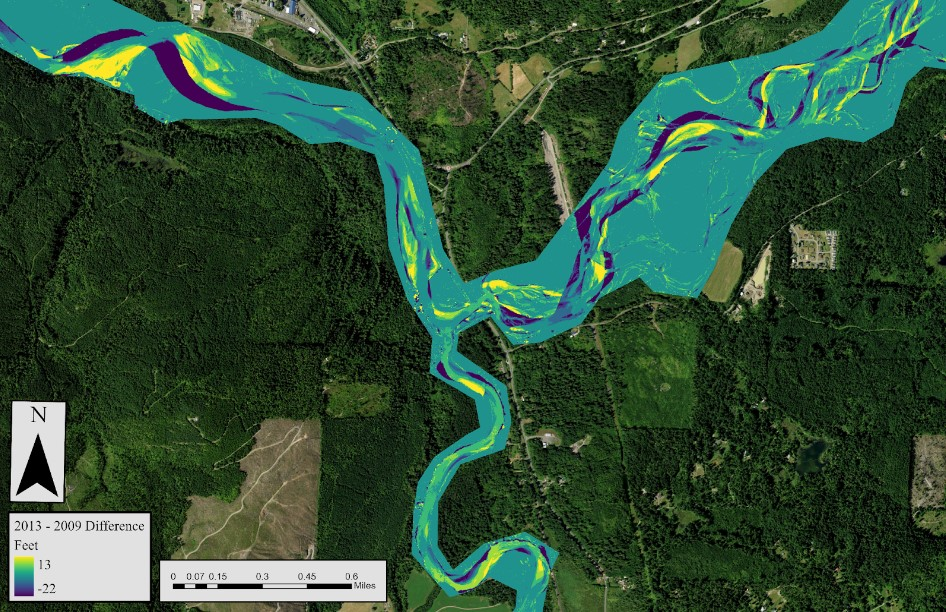
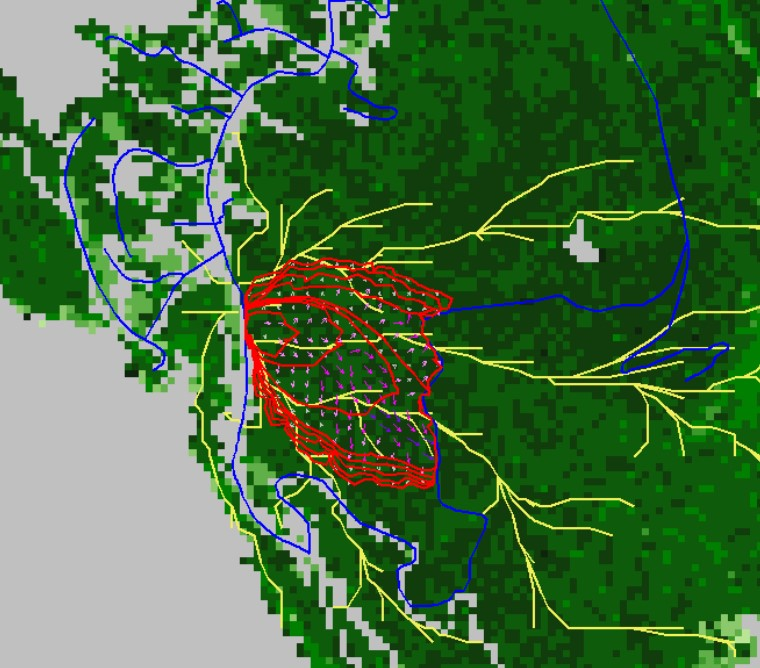
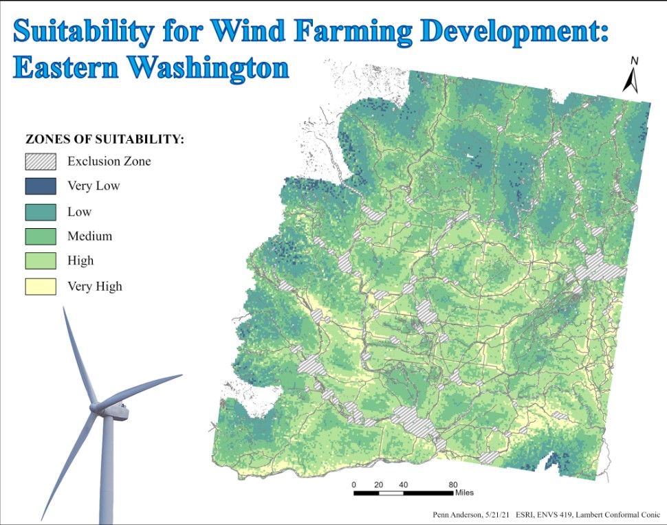
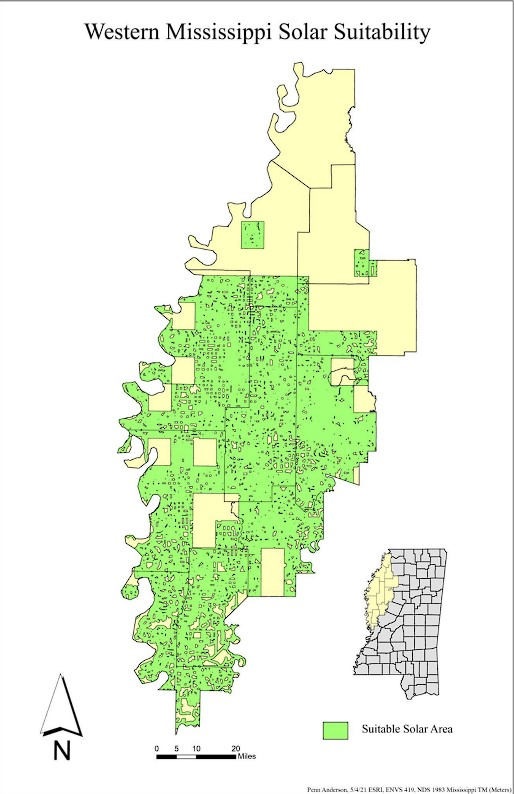
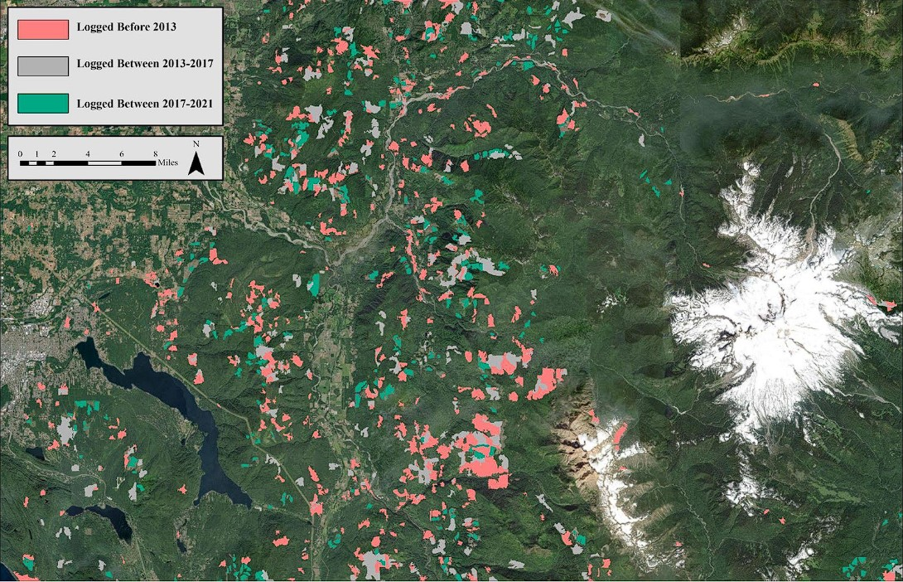
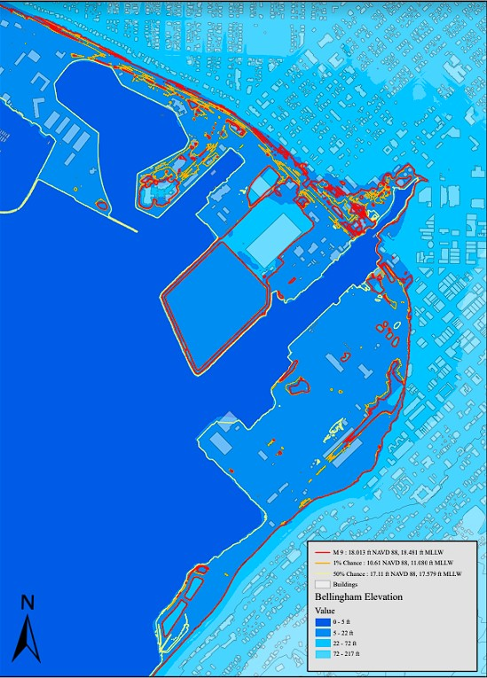

My GIS Projects
This is my current and past work that I feel best represents my abilities with using and producing clean and understandable products. I learned many new skills while studying GIS, and there are more to learn.
Please look through my projects, many will contain a zip file download which will allow you to learn more about my steps in the process and what I was figuring out.
LiDAR Change Detection
In a remote sensing class I took, I was tasked with creating and analysing LiDAR data in order to find the amount of stream and forest change over a period of time in the North Fork Area. High and minimum levels of change were detected in both the stream and forest area of interest (AOI) resulting in a range of area of change percentage. The highest rates of positive change were calculated in the Forest area, where the highest rates of negative change were calculated in the stream channel areas.
Here is a link to download my lab report on change detection: Zip File Download
Wildfire Mitigation
For a capstone project, my team and I wanted to understand the impacts that firebreaks and fuel treatments had on wildfires within the Chuckanut Mountains. Using a Fire simulation program called FlamMap, my GIS partner and I performed these simulations to understand where these mitigation techniques would be best placed. We found many locations of high impact within a wide area supporting our inference of treatments.
Here is a link to download my report on wildfire mitigation: Zip File Download
Wind Farming Suitability
With the ever-growing need for sustyainable energy, I produced a map that selected areas of best placemnet and output of wind energy within Eastern Washington. This was done using suitability assesment on ArcGIS Pro.
Solar Suitability
Solar energy is growing in recognition as a sustainable energy source. I produced a map that selected areas of best placemnet for solar farms in Western Mississippi. This was done using suitability assesment on ArcGIS Pro.
Here is a link to download my report on solar suitability: Zip File Download
Change Detection: Unsupervised Classification
Two types of change detection were used: Tasseled Cap Transformation (TCT) and Normalized Difference Vegitation Index (NDVI). Spectral Indicies were analysed to see the perfomace between the two change detection methods. This analysis was performed using ArcGIS Pro.
Here is a link to download my report on change detection: Zip File Download
Bellingham Flooding
Using LiDAR data, I found the elevation of the downtown Bellingham waterfront and calculated various water levels based on Vdatum of sea level rise and potential tsunami impacts.
Here is a link to download my report on Bellingham flooding: Zip File Download
